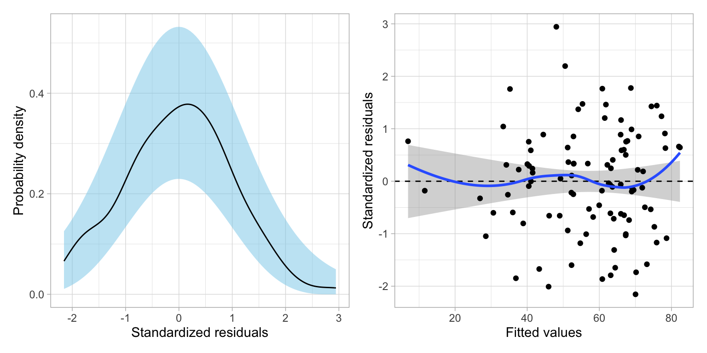

In this set of notes, you will learn about the law of likelihood, and the use of likelihood ratios as statistical evidence for model selection. To do so, we will use the pew.csv dataset (see the data codebook) to fit a set of models that explain variation in American’s political knowledge.
Recall that we had three research questions for these data:
Is there an effect of news exposure on political knowledge?
Is there an effect of news exposure on political knowledge after controlling for demographic and political covariates?
Does education level moderate the effect of news exposure on political knowledge after controlling for demographic and political covariates?
Any analysis should begin with looking at plots and computing summary statistics of the sample data. (We already did this in a previous set of notes.) After the data exploration, we can begin to think about fitting one or more models to the data. It is good science to consider the modeling strategy you will be using before you begin fitting models. There are many modeling strategies that educational scientists use in practice (e.g., forward-selection, backward-elimination) and there is no one “right” method. As you consider a modeling strategy, think about how this strategy helps provide a narrative structure for answering your research question; sometimes this leads to one strategy being more productive than others.
In the previous set of notes we began by fitting a model that only included the main-effect of news exposure. Evaluating the effect of news exposure in this model helped us answer RQ 1. We then fitted a model that included news exposure along with the set of demographic and political covariates. Evaluating the effect of news exposure in this model helped us answer RQ 2. Finally, we fitted a model that included an interaction effect of news exposure and education in along with the demographic and political covariates. Evaluating the interaction effect allowed us to answer RQ 3. These three models are:
where \(\epsilon_i \overset{i.i.d.}{\sim}\mathcal{N}(0,\sigma^2_{\epsilon})\) for each of the models.
6.3 Classical Framework of Evidence
When we have looked at statistical evidence to this point, it has been from a hypothesis testing point of view. The primary piece of evidence we use in this paradigm is the p-value. For example, if we fit Model 1 and examine the evidence for the effect of news exposure on news knoledge, we find:
# Fit Model 1lm.1=lm(knowledge ~1+ news, data = pew)# Coefficient-level outputtidy(lm.1)
The p-value associated with the effect of news exposure (\(p<.001\)), which suggests that the size of this effect is more than we would expect because of chance if the population effect was 0.
Interpreting this p-values, we would say that the probability of seeing the empirical evidence we observed (or evidence that is more extreme) if the null hypothesis that there is no effect of news exposure on news knowledge is true, is 0.000442. This implies that our observed data are inconsistent with the hypothesized model that there is no effect of news exposure. In an applied setting, we might use such evidence to decide that the level of news exposure does indeed predict variation in American’s news knowledge.
Despite being the predominant evidential paradigm used in the education and social sciences, hypothesis testing has many criticisms (e.g., Johansson, 2011; Weakliem, 2016). Among some of the stronger criticisms,
The p-value only measures evidence against the hypothesized model; not the evidence FOR a particular model.
The model we specify in the null hypothesis is often substantively untenable (how often is the effect 0? Generally as applied scientists the reason we include predictors is because we believe there is an effect.)
The p-value is based on data we haven’t observed (it is based on the observed data AND evidence that is more extreme).
If we write the p-value as a probability statement, it would be:
While hypothesis tests have filled a need in the educational and social science to have some standard for evaluating statistical evidence, it is unclear whether this is the approach we should be using. As statistician David Lindley so aptly states, “[significance tests] are widely used, yet are logically indefensible” (comment in Johnstone, 1986, p. 502). Psychologist Jacob Cohen was more pointed, saying “[hypothesis testing] has not only failed to support the advance of psychology as a science but also has seriously impeded it” (Cohen, 1994, p. 997).
In applied science, we ideally would like to collect some evidence (data) and use that to say something about how likely a particular model (or hypothesis) is based on that evidence. Symbolically we want to know,
This probability is known as the likelihood and is very different than the probability given by the p-value. In the likelihood paradigm, the likelihood is the key piece of statistical evidence used to evaluate models. For example if you were comparing Model A and Model B, you could compute the likelihood for each model and compare them. Whichever model has the higher likelihood has more empirical support. This is, in a nutshell what the Law of Likelihood states. What is even more attractive is that another axiom, the Likelihood Principle, tells us that if the goal is to compare the empirical support of competing models, all of the information in the data that can be used to do so, is contained in the ratio of the model likelihoods. That is, we can’t learn more about which model is more supported unless we collect additional data.
6.5 Joint Probability Density: A Roadstop to Computing Likelihood
In the preparation reading, you learned about the probability density of an observation \(x_i\). Now we will extend this idea to the probability density of a set of observations, say \(x_1\), \(x_2\), AND \(x_k\). The probability density of a set of observations is referred to as the joint probability density, or simply joint density.
If we can make an assumption about INDEPENDENCE, then the joint probability density would be the product of the individual densities:
This value is the joint probability density. The joint probability density indicates the probability of observing the data (\(x =\{60, 65, 67\}\)) GIVEN (1) they are drawn from a normal distribution and (2) the normal distribution has a mean of 50 and a standard deviation of 10. In other words, the joint probability density is the probability of the data given a model and parameters of the model.
Likelihood is the probability of a particular set of parameters GIVEN (1) the data, and (2) the data are generated from a particular model (e.g., normal distribution). Symbolically,
Symbolically we denote likelihood with a scripted letter “L” (\(\mathcal{L}\)). For example, we might ask the question, given the observed data \(x = \{30, 20, 24, 27\}\) come from a normal distribution, what is the likelihood (probability) that the mean is 20 and the standard deviation is 4? We might denote this as,
\[
\mathcal{L}(\mu = 20, \sigma = 4 \mid x)
\]
FYI
Although we need to specify the model this is typically not included in the symbolic notation; instead it is often a part of the assumptions.
6.6.1 An Example of Computing and Evaluating Likelihood
The likelihood allows us to answer probability questions about a set of parameters. For example, what is the likelihood (probability) that the data (\(x = \{30, 20, 24, 27\}\)) were generated from a normal distribution with a mean of 20 and standard deviation of 4? To compute the likelihood we compute the joint probability density of the data under that particular set of parameters.
prod(dnorm(x =c(30, 20, 24, 27), mean =20, sd =4))
[1] 0.0000005702554
What is the likelihood (probability) that the same set of data (\(x = \{30, 20, 24, 27\}\)) were generated from a normal distribution with a mean of 25 and standard deviation of 4?
prod(dnorm(x =c(30, 20, 24, 27), mean =25, sd =4))
[1] 0.00001774012
Given the data and the model, there is more empirical support that the parameters are \(\mathcal{N}(25,4^2)\) rather than \(\mathcal{N}(20, 4^2)\), because the likelihood is higher for the former set of parameters. We can compute a ratio of the two likelihoods to quantify the amount of additional support for the \(\mathcal{N}(25,4^2)\).
The empirical support for the \(\mathcal{N}(25,4^2)\) parameterization is 31 times that of the \(\mathcal{N}(20, 4^2)\) parameterization! In a practical setting, this would lead us to adopt a mean of 25 over a mean of 20.
6.7 Some Notes and Caveats
It is important to note that although we use the joint probability under a set of parameters to compute the likelihood of those parameters, theoretically joint density and likelihood are very different. Likelihood takes the data and model as given and computes the probability of a set of parameters. Whereas joint density assumes that the model and parameters are given and gives us the probability of the data.
FYI
Likelihood refers to the probability of the parameters and joint probability density refers to the probability of the data.
Once we collect the data, the probability of observing that set of data is 1; it is no longer unknown. The likelihood method treats our data as known and offers us a way of making probabilistic statements about the unknown parameters. This is more aligned with our scientific process than making some assumption about the parameter (e.g., \(\beta_1=0\)) and then trying to determine the probability of the data under that assumption. Moreover, likelihood does not use unobserved data (e.g., data more extreme than what we observed) in the computation.
It is also important to acknowledge what likelihood and the likelihood ratio don’t tell us. First, they only tell us the probability of a set of parameters for the data we have. Future collections of data might change the amount of support or which set of parameters is supported. Since changing the data, changes the likelihood, this also means we cannot make cross study comparisons of the likelihood (unless the studies used the exact same data). Secondly, the model assumed is important. If a different model is assumed, the likelihood will be different, and again could change the amount of support or which set of parameters is supported.
The likelihood ratio (LR), while useful for comparing the relative support between parameterizations, does not tell you that a particular parameterization is correct. For example, the LR of 31.11 tells us that there is more empirical support for the \(\mathcal{N}(25,4^2)\) parameterization than \(\mathcal{N}(20, 4^2)\). But, there might be even more support for a parameterization we haven’t considered.
These shortcomings are not unique to the likelihood paradigm The also exist in the classical hypothesis testing paradigm for statistical evidence. All in all, the added advantages to the likelihood paradigm make it more useful to applied work than hypothesis testing.
6.8 Likelihood in Regression: Back to Our Example
When fitting a regression model, we make certain assumptions about the relationship between a set of predictors and the outcome. For example, in Model 1 from our earlier example, we assume that the relationship between news exposure and news knowledge can be described by the following model:
Here we use OLS to estimate the regression coefficients. Then we can use those, along with the observed data to obtain the residuals and the estimate for the residual standard error. The residuals are the GIVEN data and the set up distributional assumptions for the model (e.g., normal, mean of 0, constant variance) allow us to compute the likelihood for the entire set of parameters in this model (\(\beta_0\), \(\beta_1\), \(\sigma^2_{\epsilon}\)).
Below is a set of syntax to compute the likelihood, based on fitting lm.1. We use the resid() function to compute the residuals. (It is the same as grabbing the column called .resid from the augment() output.) We also use the estimated value of the residual standard error (\(\hat{\sigma}_{\epsilon} = 20.3\)) from the glance() output.
# Compute likelihood for lm.1prod(dnorm(x =resid(lm.1), mean =0, sd =20.3))
[1] 1.382925e-192
This value by itself is somewhat meaningless. It is only worthwhile when we compare it to the likelihood from another model. For example, let’s compute the likelihood for an intercept-only model (Model 0) and compare this to the likelihood for lm.1.
# Fit Model 0lm.0=lm(knowledge ~1, data = pew)# Get RSE for use in likelihoodglance(lm.0)
# A tibble: 1 × 12
r.squared adj.r.squared sigma statistic p.value df logLik AIC BIC
<dbl> <dbl> <dbl> <dbl> <dbl> <dbl> <dbl> <dbl> <dbl>
1 0 0 21.5 NA NA NA -448. 900. 905.
# ℹ 3 more variables: deviance <dbl>, df.residual <int>, nobs <int>
# Compute likelihood for lm.2prod(dnorm(x =resid(lm.0), mean =0, sd =21.5))
[1] 2.489266e-195
The likelihood value for lm.1 is higher than the likelihood value for lm.0. Computing the likelihood ratio:
1.382925e-192/2.489266e-195
[1] 555.5553
This suggests that given the data, Model 1 is 555.6 times more likely than Model 0. In practice, we would adopt Model 1 over Model 0 because it is more likely given the empirical evidence (data) we have.
6.8.1 Mathematics of Likelihood
Being able to express the likelihood mathematically is important for quantitative methodologists as it allows us to manipulate and study the likelihood function and its properties. It also gives us insight into how the individual components of the likelihood affect its value.
Remember, we can express the likelihood of the regression residuals mathematically as:
In addition to normality, which gives us the equation to compute the PDF for each residual, the regression assumptions also specify that each conditional error distribution has a mean of 0 and some variance (that is the same for all conditional error distributions). We can call it \(\sigma^2_{\epsilon}\). Substituting these values into the density function, we get,
\[
\begin{split}
\mathcal{L}(\beta_0, \beta_1 | \mathrm{data}) &=\left[ \frac{1}{\sigma_{\epsilon}\sqrt{2\pi}} \right]^n \times \exp\left[-\frac{\epsilon_1^2}{2\sigma^2_{\epsilon}}\right] \times \exp\left[-\frac{\epsilon_2^2}{2\sigma^2_{\epsilon}}\right] \times \ldots \\
&~~~~~~ \times \exp\left[-\frac{\epsilon_n^2}{2\sigma^2_{\epsilon}}\right]
\end{split}
\] We can also simplify this by using the product notation:
\[
\mathcal{L}(\beta_0, \beta_1 | \mathrm{data}) =\left[ \frac{1}{\sigma_{\epsilon}\sqrt{2\pi}} \right]^n \times \prod_{i=1}^n \exp\left[-\frac{\epsilon_i^2}{2\sigma^2_{\epsilon}}\right]
\] We can also write the residuals (\(\epsilon_i\)) as a function of the regression parameters we are trying to find the likelihood for.
where \(\sigma^2_{\epsilon} = \frac{\sum \epsilon_i^2}{n}\). Because the numerator of \(\sigma^2_{\epsilon}\) can be written as \(\sum_i^n\big(Y_i - \beta_0 - \beta_1(X_i)\big)^2\), we see that the likelihood is a function of \(n\), and the regression coefficients, \(\beta_0\) and \(\beta_1\). Moreover, \(n\) is based on the data (which is given) and is thus is a constant. Mathematically, this implies that the only variables (values that can vary) in the likelihood function are the regression coefficients.
6.9 Log-Likelihood
The likelihood values are quite small since we are multiplying several probability densities (values between 0 and 1) together. Since it is hard to work with these smaller values, in practice, we often compute and work with the natural logarithm of the likelihood. So in our example, Model 0 (\(\mathcal{L}_0 = 2.489266 \times 10^{-195}\)) has a log-likelihood of:
# Log-likelihood for Model 0log(2.489266e-195)
[1] -448.0921
Similarly, we can compute the log-likelihood for Model 1 as:
# Log-likelihood for Model 1log(1.382925e-192)
[1] -441.7721
We typically denote log-likelihood using a scripted lower-case “l” (\(\mathcal{l}\)). Here,
Note that the logarithm of a decimal will be negative, so the log-likelihood will be a negative value. Less negative log-likelihood values correspond to higher likelihood values, which indicate more empirical support. Here Model 1 has a log-likelihood value (\(-441.8\)) that is less negative than Model 0’s log-likelihood value (\(-448.1\)), which indicates there is more empirical support for Model 1 than Model 0.
FYI
While it is possible using algebra to express the likelihood ratio using log-likelihoods, it does not have the same interpretational value as the LR does. Because of this, the likelihood ratio is not often expresseds using log-likelihoods.
6.9.1 Mathematics of Log-Likelihood
We can express the log-likelihood of the regression residuals mathematically by taking the natural logarithm of the likelihood we computed earlier:
Examining this equation, we see that the log-likelihood is a function of \(n\), \(\sigma^2_{\epsilon}\) and the sum of squared residuals (SSR)1. We can of course, re-express this using the the regression parameters:
And, again, since \(\sigma^2_{\epsilon}\) is a function of the regression coefficients and \(n\), this means that the only variables in the log-likelihood function are the coefficients.
6.9.2 Shortcut: The logLik() Function
The logLik() function can be used to obtain the log-likelihood directly from a fitted model object. For example, to find the log-likelihood for Model 1, we can use:
# Compute log-likelihood for Model 1logLik(lm.1)
'log Lik.' -441.7579 (df=3)
The df output tells us how many total parameters are being estimated in the model. In our case the number of total parameters in Model 0 is three (\(\beta_0\), \(\beta_{\mathrm{News~Exposure}}\), and \(\sigma^2_{\epsilon}\)). What is more important to us currently, is the log-likelihood value; \(\mathcal{l}_1=-450.2233\).
This value is slightly different than the log-likelihood we just computed of \(-441.7721\). This is not because of rounding in this case. It has to do with how the model is being estimated; the logLik() function assumes the parameters are being estimated using maximum likelihood (ML) rather than ordinary least squares (OLS). You can learn more about ML estimation in the optional set of notes, but for now, we will just use logLik() to compute the log-likelihood.
Here we compute the log-likelihood for Model 0 using the logLik() function. We also use the output to compute the likelihood for Model 0. To compute the likelihood from the log-likelihood we need to exponentiate (the reverse function of the logarithm) the the log-likelihood value using the exp() function. We also compute the log-likelihood and likelihood value for Model 1.
# Compute log-likelihood for Model 0logLik(lm.0)
'log Lik.' -448.0884 (df=2)
# Compute likelihood for Model 0exp(logLik(lm.0)[1])
[1] 2.498531e-195
# Compute log-likelihood for Model 1logLik(lm.1)
'log Lik.' -441.7579 (df=3)
# Compute likelihood for Model 1exp(logLik(lm.1)[1])
[1] 1.402758e-192
Because the output from logLik() includes extraneous information (e.g., df), we use indexing (square brackets) to extract only the part of the output we want. In this case, the [1] extracts the log-likelihood value from the logLik() output (ignoring the df part).
6.10 Model Complexity
One aspect that we need to consider is that more complex models tend to have higher likelihoods and log-likelihoods. Therefore when we compare likelihoods (or log-likelihoods) we need to consider the complexity in addition to the likelihoods. One way to quantify a model’s complexity is to consider the number of parameters that are being estimated. The more parameters that we need to estimate, the more complex the model. Recall that the number of parameters for a model are given in the df value from the logLik() function’s output.
In our example, the df value for Model 0 is two, indicating that this model is estimating two parameters (\(\beta_0\), and \(\sigma^2_{\epsilon}\)). For Model 1, the df value was three. This indicates that Model 1 is more complex than Model 0.
As we consider using the likelihood ratio (LR) or the difference in log-likelihoods for model selection, we also need to consider the model complexity. In our example, the likelihood ratio of 555.6 indicates that Model 1 has approximately 555.6 times the empirical support than Model 0. But, Model 1 is more complex than Model 0, so we would expect that it would be more empirically supported.
In this case, with a likelihood ratio of 555.6, it seems like the empirical data certainly support adopting Model 1 over Model 0. despite the added complexity of Model 1. But what if the LR was 10? Would that be enough additional support to warrant adopting Model 1 over Model 0? What about a LR of 5?
6.11 Likelihood Ratio Test for Nested Models
One key question that arises is, if the likelihood for a more complex model is higher than the likelihood for a simpler model, how large does the likelihood ratio have to be before we adopt the more complex model? In general, there is no perfect answer for this.
If the models being compared are nested, then we can carry out a hypothesis test2 to see if the LR is more than we would expect because of chance. Models are nested when the parameters in the simpler model are a subset of the parameters in the more complex model. For example, in our example, the parameters in Model 0 are a subset of the parameters in Model 1:
where \(\theta_0\) refers to the simpler model and \(\theta_1\) refers to the more complex model. This translates to adopting either the simpler model (fail to reject \(H_0\)) or the more complex model (reject \(H_0\)). To carry out this test, we translate our likelihood ratio to a test statistic called \(\chi^2\) (pronounced chi-squared):
That is we compute \(-2\) times the log of the likelihood ratio where the likelihood for the simpler model is in the numerator. (Note this is the inverse of how we have been computing the likelihood ratio!) Equivalently, we can compute this as:
The quantity \(-2\ln\big[\mathcal{L}(\theta_k)\big]\) is referred to as the residual deviance3 of Model K. It measures the amount of misfit between the model and the data. (As such, when evaluating deviance values, lower is better.) For linear models, with the classic assumptions (\(\overset{i.i.d.}{\sim}\mathcal{N}(0,\sigma^2_{\epsilon})\)), the deviance is a function of the residual sum of squares (RSS):
\[
\mathrm{Deviance} = n \ln\big(2\pi\sigma^2_{\epsilon}\big) + \frac{\mathrm{RSS}}{\sigma^2_{\epsilon}}
\]
where \(\mathrm{RSS}=\sum\epsilon_i^2\) and \(\sigma^2_{\epsilon} = \frac{\mathrm{RSS}}{n}\). This formula illustrates that the residual deviance is a generalization of the residual sum of squares (RSS), and measures the model–data misfit.
6.12.1 Mathematics of Deviance
We can express the deviance mathematically by multiplying the log-likelihood by \(-2\).
Once again, we find that the only variables in the deviance function are the regression coefficients.
In practice, we will use the logLik() function to compute the deviance.
# Compute the deviance for Model 0-2*logLik(lm.0)[1]
[1] 896.1768
# Compute the deviance for Model 1-2*logLik(lm.1)[1]
[1] 883.5158
Here the deviance for Model 1 (883.5) is less than the deviance for Model 0 (896.2). This indicates that the data have better fit to Model 1 than Model 0. How much better is the model–data fit for Model 1?
# Compute difference in deviances896.2-883.5
[1] 12.7
Model 1 improves the fit (reduces the misfit) by 12.7 over Model 0. This is the value of our \(\chi^2\)-statistic. That is, the \(\chi^2\)-statistic is the difference in residual deviance values and measures the amount of improvement in the model–data misfit.
6.12.2 Modeling the Variation in the Test Statistic
If the null hypothesis is true, the difference in deviances can be modeled using a \(\chi^2\)-distribution. The degrees-of-freedom for this \(\chi^2\)-distribution is based on the difference in the number of parameters between the complex and simpler model. In our case this difference is four (\(3-2=1\)):
Figure 6.1: Plot of the probability density function (PDF) for a \(\chi^2(1)\) distribution. The grey shaded area represents the p-value based on \(\chi^2=12.66\).
To compute the p-value we use the pchisq() function.
# Compute p-value for X^2(1) = 14.501-pchisq(q =12.66, df =1)
[1] 0.0003735622
# Alternative methodpchisq(q =12.66, df =1, lower.tail =FALSE)
[1] 0.0003735622
Based on the p-value, we would reject the null hypothesis for the likelihood ratio test, which suggests that we should adopt the more complex model (Model 1). This means that the model that includes the effect of news exposure is more empirically supported than a model that includes no predictors. Note that we are making a holistic evaluation about the model rather than about individual predictors.
6.13 Using the lrtest() Function
In practice, we can also use the lrtest() function from the {lmtest} package to carry out a likelihood ratio test. We provide this function the name of the model object for the simpler model, followed by the name of the model object for the more complex model.
# Load librarylibrary(lmtest)# LRT to compare Model 0 and Model 1lrtest(lm.0, lm.1)
6.14 Evaluating the Effect of News Exposure in Research Question 2
In RQ 2, we are evaluating the effect of news exposure on news knowledge after controlling for the set of political and demographic covariates. To do this using a likelihood ratio test, we need to compare a baseline model that includes all of the covariates to a model that includes the covariates AND the effect of news exposure. That is, the only thing that is different between the two models is that the second model includes the effect of news exposure on top of the covariates. That is we will be comparing the following two models:
To carry out the LRT we fit the two models, compute the difference in model deviances, and evaluate that difference in a \(\chi^2\)-distribution with degrees-of-freedom equal to the difference in model complexity (based on the number of parameters being estimated).
# Simple modellm.2=lm(knowledge ~1+ education + male + engagement, data = pew)# Complex modellm.3=lm(knowledge ~1+ education + male + engagement + news, data = pew)# Compute the difference in deviances between Model 1 and Model 2-2*logLik(lm.2)[1] - (-2*logLik(lm.3)[1])
The p-value is 0.002813943, suggesting that there is an effect of news exposure on news knowledge, after controlling for the set of political and demographic covariates. Again, we could also obtain this same result via using the lrtest() function.
# LRT to compare Model 2 and Model 3lrtest(lm.2, lm.3)
Likelihood ratio test
Model 1: knowledge ~ 1 + education + male + engagement
Model 2: knowledge ~ 1 + education + male + engagement + news
#Df LogLik Df Chisq Pr(>Chisq)
1 5 -420.78
2 6 -416.32 1 8.9243 0.002814 **
---
Signif. codes: 0 '***' 0.001 '**' 0.01 '*' 0.05 '.' 0.1 ' ' 1
6.15 Evaluating the Interaction Effect in Research Question 3
To evaluate the potential interaction effect between news exposure and education on news knowledge, after controlling for demographic and political covariates, we need to fit the interaction model and then compare it to a model that includes all the same predictors EXCEPT the interaction effect.
# Fit interaction modellm.4=lm(knowledge ~1+ education + male + engagement + news + news:education, data = pew)
Note that Model 3 (fitted earlier) is the baseline comparison model to evaluate the interaction effect. Here we will use the lrtest() function to compare Models 3 and 4 to evaluate the interaction effect.
# LRT to compare Model 1 and Model 2lrtest(lm.3, lm.4)
The p-value is 0.02324, suggesting that there is an interaction effect between news exposure and education level after controlling for differences in the set of political and demographic covariates.
6.16 Evaluating Assumptions
If we were adopting a “final model”, the empirical evidence would support adopting Model 4. It is always important to evaluate any adopted final models’ assumptions.
# Create residual plotsresidual_plots(lm.4)

Figure 6.2: Two residual plots for Model 4.
Based on the density plot, the assumption of normality looks reasonably met. The scatterplot suggests the assumption that the average residual is 0 is generally met—the loess smoother suggests the average residual is close to 0 at all fitted values. The homoscadasticity assumption also seems reasonable with the range of residuals generally being constant across the different fitted values. Lastly, since the sample is a random sample of Americans, the independence assumption also seems tenable.
6.17 Presenting the Results from the LRTs
Below we present a table summarizing the results of the likelihood ratio tests.
Code
# Load librarylibrary(gt)# Set up datad =data.frame(comparison =c("Model 0 vs. Model 1", "Model 2 vs. Model 3", "Model 3 vs. Model 4"),chi =c("$$\\chi^2(1) = 12.66$$", "$$\\chi^2(1) = 8.92$$", "$$\\chi^2(1) = 5.15$$"),p =c("<.001", ".003", ".023"))# Create tabled |>gt() |>cols_label(comparison =md("*Model Comparison*"),chi ="LRT Result",p =md("*p*") ) |>cols_align(columns =c(comparison),align ="left" ) |>cols_align(columns =c(chi, p),align ="center" ) |>tab_options(table.width =pct(60),quarto.disable_processing =TRUE )
Table 6.1: Results from a set of likelihood ratio tests (LRT) to compare sets of nested candidate models.
Model Comparison
LRT Result
p
Model 0 vs. Model 1
$$\chi^2(1) = 12.66$$
<.001
Model 2 vs. Model 3
$$\chi^2(1) = 8.92$$
.003
Model 3 vs. Model 4
$$\chi^2(1) = 5.15$$
.023
6.18 Reporting Individual Predictors From a Model
It is also good practice to report the coefficient-level and model-level estimates from any adopted models in a regression table. We will report results from Model 4. At the coefficient-level, the coefficients and standard errors can be reported from the tidy() output. However, since we are using a likelihood framework, the p-values from the tidy() output are incorrect! We need to compute and report likelihood-based p-values.
For example, to evaluate the effect of education on news knowledge we would essentially want to test the hypothesis that:
\[
H_0: \beta_{\mathrm{Education}} = 0
\]
To do this with a LRT, we need to compare two models:
One model that includes all of the predictors from Model 4;
One model that includes everything from Model 4 except the effect of education.
The only difference between these two models is the inclusion of the effect of education in the second model. That means any additional empirical support for the second model over the first is completely due to the effect of education. And, because the second model is nested in the first, we can evaluate this via a LRT.
# Fit full model 4lm.4=lm(knowledge ~1+ education + male + engagement + news + news:education, data = pew)# Fit model without educationlm.4_education =lm(knowledge ~1+ male + engagement + news + news:education, data = pew)# Carry out LRTlrtest(lm.4_education, lm.4)
The p-value associated with the test of whether or not there is an effect of education (at least for the main effect) is 0.0001314. We will need to obtain the likelihood-based p-value for all of the other effects in a similar way. We will
# Effect of malelm.4=lm(knowledge ~1+ education + male + engagement + news + news:education, data = pew)lm.4_male =lm(knowledge ~1+ education + engagement + news + news:education, data = pew)lrtest(lm.4_male, lm.4) # Carry out LRT
We can then replace the p-values from the tidy() output with these likelihood-based p-values. Also, since these p-values are based on chi-squared (not a t-value), we should replace the t-values from the tidy() output with the \(\chi^2\)-values from the LRTs.
If we were reporting this for publication, we could round the p-values to three decimal places. We would also want to indicate that these are likelihood-based p-values, and that the LRT is based on 1 df.
Table 6.2: Coefficients and standard errors for Model 4. The \(\chi^2\) values and p-values are based on likelihood ratio tests (LRT) with 1 degree-of-freedom to evaluate each predictor.
Predictor
B
SE
$$\chi^2$$
p
Intercept
−80.79
24.00
11.38
0.001
Education-level
6.44
1.68
14.62
<0.001
Male1
11.30
3.15
12.80
<0.001
Political engagement
0.39
0.09
17.94
<0.001
News exposure
1.17
0.44
7.45
0.006
Education-level x News exposure
−0.07
0.03
5.15
0.023
1 Male is a dummy-coded predictor with non-male as the reference group.
6.19 References
Cohen, J. (1994). The earth is round (\(p < .05\)). American Psychologist, 49(12), 997–1003.
Johnstone, D. J. (1986). Tests of significance in theory and practice. The Statistician, 35, 491–504.
Mosteller, F., & Bush, R. B. (1954). Selected quantitative techniques. In G. Lindzey (Ed.), Handbook of social psychology (pp. 289–334). Addison-Wesley.
Weakliem, D. L. (2016). Hypothesis testing and model selection in the social sciences. The Guilford Press.
Sometimes this is also referred to a the sum of squared errors (SSE).↩︎
This is in some sense mixing the paradigms of likelihood-based evidence and classical hypothesis test-based evidence. In a future set of notes we will learn about information criteria which eliminate the need to mix these two paradigms.↩︎
The use of the term “residual deviance” is not universal. Some textbooks omit the “residual” part and just refer to it as the “deviance”. Others use the term “model deviance”.↩︎
Source Code
# Likelihood: A Framework for Evidence```{r}#| echo: falsesource("scripts/_common.R")```## PreparationIn this set of notes, you will learn about the law of likelihood, and the use of likelihood ratios as statistical evidence for model selection. To do so, we will use the [pew.csv](https://raw.githubusercontent.com/zief0002/fluffy-ants/main/data/pew.csv) dataset (see the [data codebook](http://zief0002.github.io/fluffy-ants/codebooks/pew.html)) to fit a set of models that explain variation in American's political knowledge. ```{r}#| label: setup# Load librarieslibrary(broom)library(educate)library(patchwork)library(tidyverse)library(tidyr)# Import datapew =read_csv(file ="https://raw.githubusercontent.com/zief0002/fluffy-ants/main/data/pew.csv")# View datapew```<br />## Research Questions and Modeling StrategyRecall that we had three research questions for these data:1. Is there an effect of news exposure on political knowledge?2. Is there an effect of news exposure on political knowledge after controlling for demographic and political covariates?3. Does education level *moderate* the effect of news exposure on political knowledge after controlling for demographic and political covariates?Any analysis should begin with looking at plots and computing summary statistics of the sample data. (We already did this in a previous set of notes.) After the data exploration, we can begin to think about fitting one or more models to the data. It is good science to consider the modeling strategy you will be using before you begin fitting models. There are many modeling strategies that educational scientists use in practice (e.g., forward-selection, backward-elimination) and there is no one "right" method. As you consider a modeling strategy, think about how this strategy helps provide a narrative structure for answering your research question; sometimes this leads to one strategy being more productive than others.In the previous set of notes we began by fitting a model that only included the main-effect of news exposure. Evaluating the effect of news exposure in this model helped us answer RQ 1. We then fitted a model that included news exposure along with the set of demographic and political covariates. Evaluating the effect of news exposure in this model helped us answer RQ 2. Finally, we fitted a model that included an interaction effect of news exposure and education in along with the demographic and political covariates. Evaluating the interaction effect allowed us to answer RQ 3. These three models are:$$\begin{split}\mathbf{Model~1:~} \quad \mathrm{News~Knowledge}_i = &\beta_0 + \beta_1(\mathrm{News~Exposure}_i) + \epsilon_i \\[2ex]\mathbf{Model~2:~} \quad \mathrm{News~Knowledge}_i = &\beta_0 + \beta_1(\mathrm{Age}_i) + \beta_2(\mathrm{Education}_i) + \beta_3(\mathrm{Male}_i) + \\&\beta_4(\mathrm{Engagement}_i) + \beta_5(\mathrm{Ideology}_i)+ \\&\beta_6(\mathrm{Democrat}_i) + \beta_7(\mathrm{Republican}_i) + \\&\beta_8(\mathrm{News~Exposure}_i) + \epsilon_i \\[2ex]\mathbf{Model~3:~} \quad \mathrm{News~Knowledge}_i = &\beta_0 + \beta_1(\mathrm{Age}_i) + \beta_2(\mathrm{Education}_i) + \beta_3(\mathrm{Male}_i) + \\&\beta_4(\mathrm{Engagement}_i) + \beta_5(\mathrm{Ideology}_i)+ \\&\beta_6(\mathrm{Democrat}_i) + \beta_7(\mathrm{Republican}_i) + \\&\beta_8(\mathrm{News~Exposure}_i) + \beta_9(\mathrm{News~Exposure}_i)(\mathrm{Education}_i) + \epsilon_i \\[2ex]\end{split}$$where $\epsilon_i \overset{i.i.d.}{\sim}\mathcal{N}(0,\sigma^2_{\epsilon})$ for each of the models. <br />## Classical Framework of EvidenceWhen we have looked at statistical evidence to this point, it has been from a hypothesis testing point of view. The primary piece of evidence we use in this paradigm is the *p*-value. For example, if we fit Model 1 and examine the evidence for the effect of news exposure on news knoledge, we find:```{r}# Fit Model 1lm.1=lm(knowledge ~1+ news, data = pew)# Coefficient-level outputtidy(lm.1)```The *p*-value associated with the effect of news exposure ($p<.001$), which suggests that the size of this effect is more than we would expect because of chance if the population effect was 0.Interpreting this *p*-values, we would say that the probability of seeing the empirical evidence we observed (or evidence that is more extreme) if the null hypothesis that there is no effect of news exposure on news knowledge is true, is 0.000442. This implies that our observed data are inconsistent with the hypothesized model that there is no effect of news exposure. In an applied setting, we might use such evidence to decide that the level of news exposure does indeed predict variation in American's news knowledge.Despite being the predominant evidential paradigm used in the education and social sciences, hypothesis testing has many criticisms [e.g., @Johansson:2011; @Weakliem:2016]. Among some of the stronger criticisms,- The *p*-value only measures evidence against the hypothesized model; not the evidence FOR a particular model.- The model we specify in the null hypothesis is often substantively untenable (how often is the effect 0? Generally as applied scientists the reason we include predictors is because we believe there is an effect.)- The *p*-value is based on data we haven't observed (it is based on the observed data AND evidence that is more extreme).If we write the *p*-value as a probability statement, it would be:$$p\mbox{-}\mathrm{value} = P(\mathrm{Data~or~more~extreme~unobserved~data} \mid \mathrm{Model})$$While hypothesis tests have filled a need in the educational and social science to have some standard for evaluating statistical evidence, it is unclear whether this is the approach we should be using. As statistician David Lindley so aptly states, "[significance tests] are widely used, yet are logically indefensible" [comment in @Johnstone:1986, p. 502]. Psychologist Jacob Cohen was more pointed, saying "[hypothesis testing] has not only failed to support the advance of psychology as a science but also has seriously impeded it" [@Cohen:1994, p. 997].:::todo"The main purpose of a significance test is to inhibit the natural enthusiasm of the investigator" [@Mosteller:1954, p. 331--332].:::<br />## Likelihood Paradigm to Statistical EvidenceIn applied science, we ideally would like to collect some evidence (data) and use that to say something about how likely a particular model (or hypothesis) is based on that evidence. Symbolically we want to know,$$P(\mathrm{Model} \mid \mathrm{Observed~data})$$This probability is known as the *likelihood* and is very different than the probability given by the *p*-value. In the likelihood paradigm, the likelihood is the key piece of statistical evidence used to evaluate models. For example if you were comparing Model A and Model B, you could compute the likelihood for each model and compare them. Whichever model has the higher likelihood has more empirical support. This is, in a nutshell what the *Law of Likelihood* states. What is even more attractive is that another axiom, the *Likelihood Principle*, tells us that if the goal is to compare the empirical support of competing models, all of the information in the data that can be used to do so, is contained in the ratio of the model likelihoods. That is, we can't learn more about which model is more supported unless we collect additional data.<br />## Joint Probability Density: A Roadstop to Computing LikelihoodIn the preparation reading, you learned about the probability density of an observation $x_i$. Now we will extend this idea to the probability density of a set of observations, say $x_1$, $x_2$, \ldots AND $x_k$. The probability density of a set of observations is referred to as the *joint probability density*, or simply *joint density*.If we can make an assumption about INDEPENDENCE, then the joint probability density would be the product of the individual densities:$$p(x_1, x_2, x_3, \ldots, x_k) = p(x_1) \times p(x_2) \times p(x_3) \times \ldots \times p(x_k)$$Say we had three independent observations, $x =\{60, 65, 67\}$, from a $\sim\mathcal{N}(50,10)$ distribution. The joint density would be:```{r}# Compute joint densitydnorm(x =60, mean =50, sd =10) *dnorm(x =65, mean =50, sd =10) *dnorm(x =67, mean =50, sd =10)```We could also shortcut this computation,```{r}# Compute joint densityprod(dnorm(x =c(60, 65, 67), mean =50, sd =10))```This value is the joint probability density. The joint probability density indicates the probability of observing the data ($x =\{60, 65, 67\}$) GIVEN (1) they are drawn from a normal distribution and (2) the normal distribution has a mean of 50 and a standard deviation of 10. In other words, the joint probability density is the probability of the data given a model and parameters of the model.Symbolically,$$\mathrm{Joint~Density} = P(\mathrm{Data} \mid \mathrm{Model~and~Parameters})$$<br />## Computing LikelihoodLikelihood is the probability of a particular set of parameters GIVEN (1) the data, and (2) the data are generated from a particular model (e.g., normal distribution). Symbolically,$$\mathrm{Likelihood} = P(\mathrm{Parameters} \mid \mathrm{Model~and~Data})$$Symbolically we denote likelihood with a scripted letter "L" ($\mathcal{L}$). For example, we might ask the question, given the observed data $x = \{30, 20, 24, 27\}$ come from a normal distribution, what is the likelihood (probability) that the mean is 20 and the standard deviation is 4? We might denote this as,$$\mathcal{L}(\mu = 20, \sigma = 4 \mid x)$$:::fyi**FYI**Although we need to specify the model this is typically not included in the symbolic notation; instead it is often a part of the assumptions.:::<br />### An Example of Computing and Evaluating LikelihoodThe likelihood allows us to answer probability questions about a set of parameters. For example, what is the likelihood (probability) that the data ($x = \{30, 20, 24, 27\}$) were generated from a normal distribution with a mean of 20 and standard deviation of 4? To compute the likelihood we compute the joint probability density of the data under that particular set of parameters.```{r}prod(dnorm(x =c(30, 20, 24, 27), mean =20, sd =4))```What is the likelihood (probability) that the same set of data ($x = \{30, 20, 24, 27\}$) were generated from a normal distribution with a mean of 25 and standard deviation of 4?```{r}prod(dnorm(x =c(30, 20, 24, 27), mean =25, sd =4))```Given the data and the model, there is more empirical support that the parameters are $\mathcal{N}(25,4^2)$ rather than $\mathcal{N}(20, 4^2)$, because the likelihood is higher for the former set of parameters. We can compute a ratio of the two likelihoods to quantify the amount of additional support for the $\mathcal{N}(25,4^2)$.$$\begin{split}\mathrm{Likelihood~Ratio} &= \frac{0.00001774012}{0.0000005702554} \\[1ex]&= 31.11\end{split}$$The empirical support for the $\mathcal{N}(25,4^2)$ parameterization is 31 times that of the $\mathcal{N}(20, 4^2)$ parameterization! In a practical setting, this would lead us to adopt a mean of 25 over a mean of 20.<br />## Some Notes and CaveatsIt is important to note that although we use the joint probability under a set of parameters to compute the likelihood of those parameters, theoretically joint density and likelihood are very different. Likelihood takes the data and model as given and computes the probability of a set of parameters. Whereas joint density assumes that the model and parameters are given and gives us the probability of the data.:::fyi**FYI**Likelihood refers to the probability of the parameters and joint probability density refers to the probability of the data.:::Once we collect the data, the probability of observing that set of data is 1; it is no longer unknown. The likelihood method treats our data as known and offers us a way of making probabilistic statements about the unknown parameters. This is more aligned with our scientific process than making some assumption about the parameter (e.g., $\beta_1=0$) and then trying to determine the probability of the data under that assumption. Moreover, likelihood does not use unobserved data (e.g., data more extreme than what we observed) in the computation.It is also important to acknowledge what likelihood and the likelihood ratio don't tell us. First, they only tell us the probability of a set of parameters for the data we have. Future collections of data might change the amount of support or which set of parameters is supported. Since changing the data, changes the likelihood, this also means we cannot make cross study comparisons of the likelihood (unless the studies used the exact same data). Secondly, the model assumed is important. If a different model is assumed, the likelihood will be different, and again could change the amount of support or which set of parameters is supported.The likelihood ratio (LR), while useful for comparing the relative support between parameterizations, does not tell you that a particular parameterization is correct. For example, the LR of 31.11 tells us that there is more empirical support for the $\mathcal{N}(25,4^2)$ parameterization than $\mathcal{N}(20, 4^2)$. But, there might be even more support for a parameterization we haven't considered.These shortcomings are not unique to the likelihood paradigm The also exist in the classical hypothesis testing paradigm for statistical evidence. All in all, the added advantages to the likelihood paradigm make it more useful to applied work than hypothesis testing.<br />## Likelihood in Regression: Back to Our ExampleWhen fitting a regression model, we make certain assumptions about the relationship between a set of predictors and the outcome. For example, in Model 1 from our earlier example, we assume that the relationship between news exposure and news knowledge can be described by the following model:$$\begin{split}\mathrm{News~Knowledge}_i = &\beta_0 + \beta_1(\mathrm{News~Exposure}_i) + \epsilon_i \\[1ex]&\mathrm{where~}\epsilon_i \overset{i.i.d.}{\sim}\mathcal{N}(0,\sigma^2_{\epsilon})\end{split}$$Here we use OLS to estimate the regression coefficients. Then we can use those, along with the observed data to obtain the residuals and the estimate for the residual standard error. The residuals are the GIVEN data and the set up distributional assumptions for the model (e.g., normal, mean of 0, constant variance) allow us to compute the likelihood for the entire set of parameters in this model ($\beta_0$, $\beta_1$, $\sigma^2_{\epsilon}$).Below is a set of syntax to compute the likelihood, based on fitting `lm.1`. We use the `resid()` function to compute the residuals. (It is the same as grabbing the column called `.resid` from the `augment()` output.) We also use the estimated value of the residual standard error ($\hat{\sigma}_{\epsilon} = 20.3$) from the `glance()` output.```{r}# Get RSE for use in likelihoodglance(lm.1)# Compute likelihood for lm.1prod(dnorm(x =resid(lm.1), mean =0, sd =20.3))```This value by itself is somewhat meaningless. It is only worthwhile when we compare it to the likelihood from another model. For example, let's compute the likelihood for an intercept-only model (Model 0) and compare this to the likelihood for `lm.1`. ```{r}# Fit Model 0lm.0=lm(knowledge ~1, data = pew)# Get RSE for use in likelihoodglance(lm.0)# Compute likelihood for lm.2prod(dnorm(x =resid(lm.0), mean =0, sd =21.5))```The likelihood value for `lm.1` is higher than the likelihood value for `lm.0`. Computing the likelihood ratio:```{r}1.382925e-192/2.489266e-195```This suggests that given the data, Model 1 is 555.6 times more likely than Model 0. In practice, we would adopt Model 1 over Model 0 because it is more likely given the empirical evidence (data) we have.:::mathnote### Mathematics of LikelihoodBeing able to express the likelihood mathematically is important for quantitative methodologists as it allows us to manipulate and study the likelihood function and its properties. It also gives us insight into how the individual components of the likelihood affect its value.Remember, we can express the likelihood of the regression residuals mathematically as:$$\mathcal{L}(\beta_0, \beta_1 | \mathrm{data}) = p(\epsilon_1) \times p(\epsilon_2) \times \ldots \times p(\epsilon_n)$$where the probability density of each residual (assuming normality) is:$$p(\epsilon_i) = \frac{1}{\sigma\sqrt{2\pi}}\exp\left[-\frac{(\epsilon_i-\mu)^2}{2\sigma^2}\right]$$In addition to normality, which gives us the equation to compute the PDF for each residual, the regression assumptions also specify that each conditional error distribution has a mean of 0 and some variance (that is the same for all conditional error distributions). We can call it $\sigma^2_{\epsilon}$. Substituting these values into the density function, we get,$$\begin{split}p(\epsilon_i) &= \frac{1}{\sigma_{\epsilon}\sqrt{2\pi}}\exp\left[-\frac{(\epsilon_i-0)^2}{2\sigma^2_{\epsilon}}\right]\\[1em]&= \frac{1}{\sigma_{\epsilon}\sqrt{2\pi}}\exp\left[-\frac{(\epsilon_i)^2}{2\sigma^2_{\epsilon}}\right]\end{split}$$Now we use this expression for each of the $p(\epsilon_i)$ values in the likelihood computation.$$\begin{split}\mathcal{L}(\beta_0, \beta_1 | \mathrm{data}) &= p(\epsilon_1) \times p(\epsilon_2) \times \ldots \times p(\epsilon_n) \\[1em]&= \frac{1}{\sigma_{\epsilon}\sqrt{2\pi}}\exp\left[-\frac{\epsilon_1^2}{2\sigma^2_{\epsilon}}\right] \times \frac{1}{\sigma_{\epsilon}\sqrt{2\pi}}\exp\left[-\frac{\epsilon_2^2}{2\sigma^2_{\epsilon}}\right] \times \\&~~~~~~\ldots \times \frac{1}{\sigma_{\epsilon}\sqrt{2\pi}}\exp\left[-\frac{\epsilon_n^2}{2\sigma^2_{\epsilon}}\right]\end{split}$$We can simplify this:$$\begin{split}\mathcal{L}(\beta_0, \beta_1 | \mathrm{data}) &=\left[ \frac{1}{\sigma_{\epsilon}\sqrt{2\pi}} \right]^n \times \exp\left[-\frac{\epsilon_1^2}{2\sigma^2_{\epsilon}}\right] \times \exp\left[-\frac{\epsilon_2^2}{2\sigma^2_{\epsilon}}\right] \times \ldots \\&~~~~~~ \times \exp\left[-\frac{\epsilon_n^2}{2\sigma^2_{\epsilon}}\right]\end{split}$$We can also simplify this by using the product notation:$$\mathcal{L}(\beta_0, \beta_1 | \mathrm{data}) =\left[ \frac{1}{\sigma_{\epsilon}\sqrt{2\pi}} \right]^n \times \prod_{i=1}^n \exp\left[-\frac{\epsilon_i^2}{2\sigma^2_{\epsilon}}\right]$$We can also write the residuals ($\epsilon_i$) as a function of the regression parameters we are trying to find the likelihood for.$$\mathcal{L}(\beta_0, \beta_1 | \mathrm{data}) =\left[ \frac{1}{\sigma_{\epsilon}\sqrt{2\pi}} \right]^n \times \prod_{i=1}^n \exp\left[-\frac{\big[Y_i - \beta_0 - \beta_1(X_i)\big]^2}{2\sigma^2_{\epsilon}}\right]$$where $\sigma^2_{\epsilon} = \frac{\sum \epsilon_i^2}{n}$. Because the numerator of $\sigma^2_{\epsilon}$ can be written as $\sum_i^n\big(Y_i - \beta_0 - \beta_1(X_i)\big)^2$, we see that the likelihood is a function of $n$, and the regression coefficients, $\beta_0$ and $\beta_1$. Moreover, $n$ is based on the data (which is given) and is thus is a constant. Mathematically, this implies that the only variables (values that can vary) in the likelihood function are the regression coefficients.:::<br />## Log-LikelihoodThe likelihood values are quite small since we are multiplying several probability densities (values between 0 and 1) together. Since it is hard to work with these smaller values, in practice, we often compute and work with the natural logarithm of the likelihood. So in our example, Model 0 ($\mathcal{L}_0 = 2.489266 \times 10^{-195}$) has a log-likelihood of:```{r}# Log-likelihood for Model 0log(2.489266e-195)```Similarly, we can compute the log-likelihood for Model 1 as:```{r}# Log-likelihood for Model 1log(1.382925e-192)```We typically denote log-likelihood using a scripted lower-case "l" ($\mathcal{l}$). Here,$$\begin{split}\mathcal{l}_0 &= -448.0921 \\[1ex]\mathcal{l}_1 &= -441.7721 \\[1ex]\end{split}$$Note that the logarithm of a decimal will be negative, so the log-likelihood will be a negative value. Less negative log-likelihood values correspond to higher likelihood values, which indicate more empirical support. Here Model 1 has a log-likelihood value ($-441.8$) that is less negative than Model 0's log-likelihood value ($-448.1$), which indicates there is more empirical support for Model 1 than Model 0.:::fyi**FYI**While it is possible using algebra to express the likelihood ratio using log-likelihoods, it does not have the same interpretational value as the LR does. Because of this, the likelihood ratio is not often expresseds using log-likelihoods.:::<!-- We can also express the likelihood ratio using log-likelihoods. To do so we take the natural logarithm of the likelihood ratio. We also re-write it using the rules of logarithms (from algebra). --><!-- $$ --><!-- \begin{split} --><!-- \ln(\mathrm{LR}) &= \ln \bigg(\frac{\mathcal{L}_2}{\mathcal{L}_1}\bigg) \\[2ex] --><!-- &= \ln \big(\mathcal{L}_2\big) - \ln \big(\mathcal{L}_1\big) --><!-- \end{split} --><!-- $$ --><!-- That is, we can find an equivalent relative support metric to the LR based on the log-likelihoods by computing the difference between them. For our example: --><!-- ```{r} --><!-- # Difference in log-likelihoods --><!-- log(2.910762e-196) - log(2.089334e-199) --><!-- # Equivalent to ln(LR) --><!-- log(2.910762e-196 / 2.089334e-199) --><!-- ``` --><!-- Unfortunately, this difference doesn't have the same interpretational value as the LR does, bcause this difference is in log-units. In order to get that interpretation back, we need to exponentiate (the reverse function of the logarithm) the difference: --><!-- ```{r} --><!-- # Exponentiate the difference in log-likelihoods --><!-- exp(7.239325) --><!-- ``` --><!-- Again, Model 1 has 308244.9 times the empirical support than Model 0. -->:::mathnote### Mathematics of Log-LikelihoodWe can express the log-likelihood of the regression residuals mathematically by taking the natural logarithm of the likelihood we computed earlier:$$\begin{split}\ln \Bigl(\mathcal{L}(\beta_0, \beta_1 | \mathrm{data})\Bigr) &= \ln \Biggl( \left[ \frac{1}{\sigma_{\epsilon}\sqrt{2\pi}} \right]^n \times \exp\left[-\frac{\epsilon_1^2}{2\sigma^2_{\epsilon}}\right] \times \\&~~~~~~ \exp\left[-\frac{\epsilon_2^2}{2\sigma^2_{\epsilon}}\right] \times \ldots \times \exp\left[-\frac{\epsilon_n^2}{2\sigma^2_{\epsilon}}\right] \Biggr) \\\end{split}$$Using our rules for logarithms and re-arranging gives,$$\mathcal{l}(\beta_0, \beta_1 | \mathrm{data}) = -\frac{n}{2} \times \ln (2\pi\sigma^2_{\epsilon}) - \frac{1}{2\sigma^2_{\epsilon}} \times \sum \epsilon_i^2$$Examining this equation, we see that the log-likelihood is a function of $n$, $\sigma^2_{\epsilon}$ and the sum of squared residuals (SSR)^[Sometimes this is also referred to a the sum of squared errors (SSE).]. We can of course, re-express this using the the regression parameters:$$\mathcal{l}(\beta_0, \beta_1 | \mathrm{data}) = -\frac{n}{2} \times \ln (2\pi\sigma^2_{\epsilon}) - \frac{1}{2\sigma^2_{\epsilon}} \times \sum \big[Y_i - \beta_0 - \beta_1(X_i)\big]^2$$And, again, since $\sigma^2_{\epsilon}$ is a function of the regression coefficients and $n$, this means that the only variables in the log-likelihood function are the coefficients.:::<br />### Shortcut: The `logLik()` FunctionThe `logLik()` function can be used to obtain the log-likelihood directly from a fitted model object. For example, to find the log-likelihood for Model 1, we can use:```{r}# Compute log-likelihood for Model 1logLik(lm.1)```The `df` output tells us how many **total parameters** are being estimated in the model. In our case the number of total parameters in Model 0 is three ($\beta_0$, $\beta_{\mathrm{News~Exposure}}$, and $\sigma^2_{\epsilon}$). What is more important to us currently, is the log-likelihood value; $\mathcal{l}_1=-450.2233$.This value is slightly different than the log-likelihood we just computed of $-441.7721$. This is not because of rounding in this case. It has to do with how the model is being estimated; the `logLik()` function assumes the parameters are being estimated using maximum likelihood (ML) rather than ordinary least squares (OLS). You can learn more about ML estimation in the optional set of notes, but for now, we will just use `logLik()` to compute the log-likelihood.Here we compute the log-likelihood for Model 0 using the `logLik()` function. We also use the output to compute the likelihood for Model 0. To compute the likelihood from the log-likelihood we need to exponentiate (the reverse function of the logarithm) the the log-likelihood value using the `exp()` function. We also compute the log-likelihood and likelihood value for Model 1. ```{r}# Compute log-likelihood for Model 0logLik(lm.0)# Compute likelihood for Model 0exp(logLik(lm.0)[1])# Compute log-likelihood for Model 1logLik(lm.1)# Compute likelihood for Model 1exp(logLik(lm.1)[1])```Because the output from `logLik()` includes extraneous information (e.g., `df`), we use indexing (square brackets) to extract only the part of the output we want. In this case, the `[1]` extracts the log-likelihood value from the `logLik()` output (ignoring the `df` part).<br />## Model ComplexityOne aspect that we need to consider is that more complex models tend to have higher likelihoods and log-likelihoods. Therefore when we compare likelihoods (or log-likelihoods) we need to consider the complexity in addition to the likelihoods. One way to quantify a model's complexity is to consider the number of parameters that are being estimated. The more parameters that we need to estimate, the more complex the model. Recall that the number of parameters for a model are given in the `df` value from the `logLik()` function's output.In our example, the `df` value for Model 0 is two, indicating that this model is estimating two parameters ($\beta_0$, and $\sigma^2_{\epsilon}$). For Model 1, the `df` value was three. This indicates that Model 1 is more complex than Model 0.As we consider using the likelihood ratio (LR) or the difference in log-likelihoods for model selection, we also need to consider the model complexity. In our example, the likelihood ratio of 555.6 indicates that Model 1 has approximately 555.6 times the empirical support than Model 0. But, Model 1 is more complex than Model 0, so we would expect that it would be more empirically supported.In this case, with a likelihood ratio of 555.6, it seems like the empirical data certainly support adopting Model 1 over Model 0. despite the added complexity of Model 1. But what if the LR was 10? Would that be enough additional support to warrant adopting Model 1 over Model 0? What about a LR of 5? <br />## Likelihood Ratio Test for Nested ModelsOne key question that arises is, if the likelihood for a more complex model is higher than the likelihood for a simpler model, how large does the likelihood ratio have to be before we adopt the more complex model? In general, there is no perfect answer for this.If the models being compared are nested, then we can carry out a hypothesis test^[This is in some sense mixing the paradigms of likelihood-based evidence and classical hypothesis test-based evidence. In a future set of notes we will learn about information criteria which eliminate the need to mix these two paradigms.] to see if the LR is more than we would expect because of chance. Models are nested when the parameters in the simpler model are a subset of the parameters in the more complex model. For example, in our example, the parameters in Model 0 are a subset of the parameters in Model 1:$$\begin{split}\mathbf{Model~1~Parameters:}&\quad\{\beta_0,~\beta_{\mathrm{News~Exposure}},~\sigma^2_{\epsilon}\}\\[1ex]\mathbf{Model~0~Parameters:}&\quad\{\beta_0,~\sigma^2_{\epsilon}\}\\[1ex]\end{split}$$The parameters for Model 0 all appear in the list of parameters for Model 1. Because of this we can say that Model 0 is *nested* in Model 1.<br />### Hypothesis Test of the LRTWhen we have nested models we can carry out a hypothesis test to decide between the following competing hypotheses:$$\begin{split}H_0:& ~\theta_0 = \{\beta_0,~\sigma^2_{\epsilon}\}\\[1ex]H_A:& \theta_1 = \{\beta_0,~\beta_{\mathrm{News~Exposure}},~\sigma^2_{\epsilon}\}\end{split}$$where $\theta_0$ refers to the simpler model and $\theta_1$ refers to the more complex model. This translates to adopting either the simpler model (fail to reject $H_0$) or the more complex model (reject $H_0$). To carry out this test, we translate our likelihood ratio to a test statistic called $\chi^2$ (pronounced chi-squared):$$\chi^2 = -2 \ln \bigg(\frac{\mathcal{L}({\theta_0})}{\mathcal{L}({\theta_1})}\bigg)$$That is we compute $-2$ times the log of the likelihood ratio where the likelihood for the simpler model is in the numerator. (Note this is the inverse of how we have been computing the likelihood ratio!) Equivalently, we can compute this as:$$\chi^2 = -2 \bigg(\ln \bigg[\mathcal{L}({\theta_0})\bigg] - \ln \bigg[\mathcal{L}({\theta_1})\bigg]\bigg)$$For our example, we compute this using the following syntax:```{r}# Compute chi-squared-2* (logLik(lm.0)[1] -logLik(lm.1)[1])```<br />## Deviance: A Measure of the Model--Data ErrorIf we re-write the formula for the $\chi^2$-statistic by distributing the $-2$, we get a better glimpse of what this statistic is measuring.$$\chi^2 = -2 \ln \bigg[\mathcal{L}({\theta_0})\bigg] - \bigg(-2\ln \bigg[\mathcal{L}({\theta_1})\bigg]\bigg)$$The quantity $-2\ln\big[\mathcal{L}(\theta_k)\big]$ is referred to as the *residual deviance*^[The use of the term "residual deviance" is not universal. Some textbooks omit the "residual" part and just refer to it as the "deviance". Others use the term "model deviance".] of Model K. It measures the amount of misfit between the model and the data. (As such, when evaluating deviance values, lower is better.) For linear models, with the classic assumptions ($\overset{i.i.d.}{\sim}\mathcal{N}(0,\sigma^2_{\epsilon})$), the deviance is a function of the residual sum of squares (RSS):$$\mathrm{Deviance} = n \ln\big(2\pi\sigma^2_{\epsilon}\big) + \frac{\mathrm{RSS}}{\sigma^2_{\epsilon}}$$where $\mathrm{RSS}=\sum\epsilon_i^2$ and $\sigma^2_{\epsilon} = \frac{\mathrm{RSS}}{n}$. This formula illustrates that the residual deviance is a generalization of the residual sum of squares (RSS), and measures the model--data misfit.:::mathnote### Mathematics of DevianceWe can express the deviance mathematically by multiplying the log-likelihood by $-2$.$$\begin{split}\mathrm{Deviance} &= -2 \times\mathcal{l}(\beta_0, \beta_1 | \mathrm{data}) \\[1ex]&= -2 \bigg(-\frac{n}{2} \times \ln (2\pi\sigma^2_{\epsilon}) - \frac{1}{2\sigma^2_{\epsilon}} \times \sum \epsilon_i^2\bigg) \\[1ex]&= -n\ln (2\pi\sigma^2_{\epsilon}) + \frac{1}{\sigma^2_{\epsilon}}\sum \epsilon_i^2 \\[1ex]&= -n\ln (2\pi\sigma^2_{\epsilon}) + \frac{\mathrm{RSS}}{\sigma^2_{\epsilon}}\end{split}$$Rewriting this using the parameters from the likelihood:$$\mathrm{Deviance} = -n\ln (2\pi\sigma^2_{\epsilon}) + \frac{\sum_{i=1}^n \big[Y_i-\beta_0-\beta_1(X_i)\big]^2}{\sigma^2_{\epsilon}}$$Once again, we find that the only variables in the deviance function are the regression coefficients.:::In practice, we will use the `logLik()` function to compute the deviance.```{r}# Compute the deviance for Model 0-2*logLik(lm.0)[1]# Compute the deviance for Model 1-2*logLik(lm.1)[1]```Here the deviance for Model 1 (883.5) is less than the deviance for Model 0 (896.2). This indicates that the data have better fit to Model 1 than Model 0. How much better is the model--data fit for Model 1?```{r}# Compute difference in deviances896.2-883.5```Model 1 improves the fit (reduces the misfit) by 12.7 over Model 0. This is the value of our $\chi^2$-statistic. That is, the $\chi^2$-statistic is the difference in residual deviance values and measures the amount of improvement in the model--data misfit.<br />### Modeling the Variation in the Test StatisticIf the null hypothesis is true, the difference in deviances can be modeled using a $\chi^2$-distribution. The degrees-of-freedom for this $\chi^2$-distribution is based on the difference in the number of parameters between the complex and simpler model. In our case this difference is four ($3-2=1$):$$\chi^2(1) = 12.66$$```{r}#| label: fig-01#| out-width: "70%"#| fig-cap: "Plot of the probability density function (PDF) for a $\\chi^2(1)$ distribution. The grey shaded area represents the *p*-value based on $\\chi^2=12.66$."#| fig-alt: "Plot of the probability density function (PDF) for a $\\chi^2(1)$ distribution. The grey shaded area represents the *p*-value based on $\\chi^2=12.66$."#| code-fold: true# Create datasetfig_01 =data.frame(X =seq(from =0, to =20, by =0.01) ) %>%mutate(Y =dchisq(x = X, df =1) )# Filter out X<=65shaded = fig_01 %>%filter(X >=12.66)# Create plotggplot(data = fig_01, aes(x = X, y = Y)) +geom_line() +xlab("Chi-squared") +ylab("Probability density") +theme_light() +geom_ribbon(data = shaded, ymin =-10, aes(ymax = Y), color ="#bbbbbb", alpha =0.4)```To compute the *p*-value we use the `pchisq()` function.```{r}# Compute p-value for X^2(1) = 14.501-pchisq(q =12.66, df =1)# Alternative methodpchisq(q =12.66, df =1, lower.tail =FALSE)```Based on the *p*-value, we would reject the null hypothesis for the likelihood ratio test, which suggests that we should adopt the more complex model (Model 1). This means that the model that includes the effect of news exposure is more empirically supported than a model that includes no predictors. Note that we are making a holistic evaluation about the model rather than about individual predictors. <!-- To determine how much more variation Model 1 explains in news knowledge than Model 0 does, we look at the $R^2$ values from the `glance()` output. --><!-- ```{r} --><!-- # Model-level output Model 0 --><!-- glance(lm.0) --><!-- # Model-level output Model 1 --><!-- glance(lm.1) --><!-- ``` --><!-- Model 1 explains 26.4% of the variation in peer ratings compared to Model 0, which explains 0% of the variation in peer ratings. This difference is statistically significant based on the *p*-value obtained from the likelihood ratio test ($p=0.000041$). --><br />## Using the `lrtest()` FunctionIn practice, we can also use the `lrtest()` function from the `{lmtest}` package to carry out a likelihood ratio test. We provide this function the name of the model object for the simpler model, followed by the name of the model object for the more complex model.```{r}# Load librarylibrary(lmtest)# LRT to compare Model 0 and Model 1lrtest(lm.0, lm.1)```<br />## Evaluating the Effect of News Exposure in Research Question 2In RQ 2, we are evaluating the effect of news exposure on news knowledge after controlling for the set of political and demographic covariates. To do this using a likelihood ratio test, we need to compare a baseline model that includes all of the covariates to a model that includes the covariates AND the effect of news exposure. That is, the only thing that is different between the two models is that the second model includes the effect of news exposure on top of the covariates. That is we will be comparing the following two models:$$\begin{split}\mathbf{Simple~Model:~} \quad \mathrm{News~Knowledge}_i = &\beta_0 + \beta_1(\mathrm{Education}_i) + \beta_2(\mathrm{Male}_i) + \\&\beta_3(\mathrm{Engagement}_i) + \epsilon_i \\[2ex]\mathbf{Complex~Model:~} \quad \mathrm{News~Knowledge}_i = &\beta_0 + \beta_1(\mathrm{Education}_i) + \beta_2(\mathrm{Male}_i) + \\&\beta_3(\mathrm{Engagement}_i) + \beta_8(\mathrm{News~Exposure}_i) + \epsilon_i \\[2ex]\end{split}$$By comparing the parameters of the two models, we can see that the simpler model is nested in the more complex model. $$\begin{split}\mathbf{Simple~Model~Parameters:}&\quad\{\beta_0,~\beta_{\mathrm{Education}},~\beta_{\mathrm{Male}},~\beta_{\mathrm{Engagement}},~\sigma^2_{\epsilon}\}\\[1ex]\mathbf{Complex~Model~Parameters:}&\quad\{\beta_0, ~\beta_{\mathrm{Education}},~\beta_{\mathrm{Male}},~\beta_{\mathrm{Engagement}},~\beta_{\mathrm{News~Exposure}},~\sigma^2_{\epsilon}\}\\[1ex]\end{split}$$To carry out the LRT we fit the two models, compute the difference in model deviances, and evaluate that difference in a $\chi^2$-distribution with degrees-of-freedom equal to the difference in model complexity (based on the number of parameters being estimated).```{r}# Simple modellm.2=lm(knowledge ~1+ education + male + engagement, data = pew)# Complex modellm.3=lm(knowledge ~1+ education + male + engagement + news, data = pew)# Compute the difference in deviances between Model 1 and Model 2-2*logLik(lm.2)[1] - (-2*logLik(lm.3)[1])# Compute the difference in model complexity6-5# Compute p-value for X^2(1) = 7.960401pchisq(q =8.924345, df =1, lower.tail =FALSE)```The *p*-value is 0.002813943, suggesting that there is an effect of news exposure on news knowledge, after controlling for the set of political and demographic covariates. Again, we could also obtain this same result via using the `lrtest()` function.```{r}# LRT to compare Model 2 and Model 3lrtest(lm.2, lm.3)```<br />## Evaluating the Interaction Effect in Research Question 3To evaluate the potential interaction effect between news exposure and education on news knowledge, after controlling for demographic and political covariates, we need to fit the interaction model and then compare it to a model that includes all the same predictors EXCEPT the interaction effect.```{r}# Fit interaction modellm.4=lm(knowledge ~1+ education + male + engagement + news + news:education, data = pew)```Note that Model 3 (fitted earlier) is the baseline comparison model to evaluate the interaction effect. Here we will use the `lrtest()` function to compare Models 3 and 4 to evaluate the interaction effect.```{r}# LRT to compare Model 1 and Model 2lrtest(lm.3, lm.4)```The *p*-value is 0.02324, suggesting that there is an interaction effect between news exposure and education level after controlling for differences in the set of political and demographic covariates.<br />## Evaluating AssumptionsIf we were adopting a "final model", the empirical evidence would support adopting Model 4. It is always important to evaluate any adopted final models' assumptions.```{r}#| label: fig-residuals-linear#| fig-cap: "Two residual plots for Model 4."#| fig-alt: "Two residual plots for Model 4."#| fig-width: 8#| fig-height: 4#| out-width: "80%"# Create residual plotsresidual_plots(lm.4)```Based on the density plot, the assumption of normality looks reasonably met. The scatterplot suggests the assumption that the average residual is 0 is generally met---the loess smoother suggests the average residual is close to 0 at all fitted values. The homoscadasticity assumption also seems reasonable with the range of residuals generally being constant across the different fitted values. Lastly, since the sample is a random sample of Americans, the independence assumption also seems tenable.## Presenting the Results from the LRTsBelow we present a table summarizing the results of the likelihood ratio tests.```{r}#| label: tbl-model-likelihood#| tbl-cap: "Results from a set of likelihood ratio tests (LRT) to compare sets of nested candidate models. "#| code-fold: true# Load librarylibrary(gt)# Set up datad =data.frame(comparison =c("Model 0 vs. Model 1", "Model 2 vs. Model 3", "Model 3 vs. Model 4"),chi =c("$$\\chi^2(1) = 12.66$$", "$$\\chi^2(1) = 8.92$$", "$$\\chi^2(1) = 5.15$$"),p =c("<.001", ".003", ".023"))# Create tabled |>gt() |>cols_label(comparison =md("*Model Comparison*"),chi ="LRT Result",p =md("*p*") ) |>cols_align(columns =c(comparison),align ="left" ) |>cols_align(columns =c(chi, p),align ="center" ) |>tab_options(table.width =pct(60),quarto.disable_processing =TRUE )```<!-- ```{r} --><!-- #| results: asis --><!-- #| code-fold: true --><!-- # Load library --><!-- library(texreg) --><!-- # Create the table --><!-- htmlreg( --><!-- l = list(lm.0, lm.1, lm.2, lm.3, lm.4), --><!-- stars = numeric(0), #No p-value stars --><!-- digits = 3, --><!-- padding = 20, #Add space around columns (you may need to adjust this via trial-and-error) --><!-- include.adjrs = FALSE, #Omit Adjusted R^2 --><!-- include.nobs = FALSE, #Omit sample size --><!-- include.rmse = TRUE, #Include RMSE --><!-- custom.model.names = c("Model 0", "Model 1", "Model 2", "Model 3", "Model 4"), --><!-- custom.coef.names = c("Intercept", "News Exposure", --><!-- "Education (in years)", "Male", --><!-- "Political Engagement", --><!-- "Education x News Exposure"), --><!-- custom.note = "Note. Male, is a dummy-coded predictors. The reference group is non-males.", --><!-- reorder.coef = c(2:6, 1), #Put intercept at bottom of table --><!-- custom.gof.rows = list( --><!-- `ln(Likelihood)` = c(-448.09, -441.76, -417.93, -413.92, -411.33) --><!-- ), --><!-- reorder.gof = c(3, 2, 1), --><!-- caption.above = TRUE, #Move caption above table --><!-- inner.rules = 1, #Include line rule before model-level output --><!-- outer.rules = 1, #Include line rules around table --><!-- caption = "Table 2: Coefficients (and standard errors) for five models evaluating predictors of news knowledge." --><!-- ) --><!-- ``` --><br />## Reporting Individual Predictors From a ModelIt is also good practice to report the coefficient-level and model-level estimates from any adopted models in a regression table. We will report results from Model 4. At the coefficient-level, the coefficients and standard errors can be reported from the `tidy()` output. However, since we are using a likelihood framework, the *p*-values from the `tidy()` output are incorrect! We need to compute and report likelihood-based *p*-values.For example, to evaluate the effect of education on news knowledge we would essentially want to test the hypothesis that:$$H_0: \beta_{\mathrm{Education}} = 0$$To do this with a LRT, we need to compare two models:- One model that includes all of the predictors from Model 4;- One model that includes everything from Model 4 *except* the effect of education.The only difference between these two models is the inclusion of the effect of education in the second model. That means any additional empirical support for the second model over the first is completely due to the effect of education. And, because the second model is nested in the first, we can evaluate this via a LRT.```{r}# Fit full model 4lm.4=lm(knowledge ~1+ education + male + engagement + news + news:education, data = pew)# Fit model without educationlm.4_education =lm(knowledge ~1+ male + engagement + news + news:education, data = pew)# Carry out LRTlrtest(lm.4_education, lm.4)```The *p*-value associated with the test of whether or not there is an effect of education (at least for the main effect) is 0.0001314. We will need to obtain the likelihood-based *p*-value for all of the other effects in a similar way. We will```{r}# Effect of malelm.4=lm(knowledge ~1+ education + male + engagement + news + news:education, data = pew)lm.4_male =lm(knowledge ~1+ education + engagement + news + news:education, data = pew)lrtest(lm.4_male, lm.4) # Carry out LRT# Effect of engagementlm.4=lm(knowledge ~1+ education + male + engagement + news + news:education, data = pew)lm.4_engage =lm(knowledge ~1+ education + male + news + news:education, data = pew)lrtest(lm.4_engage, lm.4) # Carry out LRT# Effect of new exposure (main-effect)lm.4=lm(knowledge ~1+ education + male + engagement + news + news:education, data = pew)lm.4_news =lm(knowledge ~1+ education + male + engagement + news:education, data = pew)lrtest(lm.4_news, lm.4) # Carry out LRT# Effect of interactionlm.4=lm(knowledge ~1+ education + male + engagement + news + news:education, data = pew)lm.4_interaction =lm(knowledge ~1+ education + male + engagement + news, data = pew)lrtest(lm.4_interaction, lm.4) # Carry out LRT# Interceptlm.4=lm(knowledge ~1+ education + male + engagement + news + news:education, data = pew)lm.4_intercept =lm(knowledge~0+ education + male + engagement + news + news:education, data = pew)lrtest(lm.4_intercept, lm.4) # Carry out LRT```We can then replace the *p*-values from the `tidy()` output with these likelihood-based *p*-values. Also, since these *p*-values are based on chi-squared (not a *t*-value), we should replace the *t*-values from the `tidy()` output with the $\chi^2$-values from the LRTs.```{r}tidy(lm.4) |>mutate(statistic =c(11.38, 14.62, 12.80, 17.94, 7.45, 5.15),p.value =c(0.0007417, 0.0001314, 0.0003466, 0.0000228, 0.006351, 0.02324) ) ```If we were reporting this for publication, we could round the *p*-values to three decimal places. We would also want to indicate that these are likelihood-based *p*-values, and that the LRT is based on 1 *df*.```{r}#| label: tbl-model-4#| tbl-cap: "Coefficients and standard errors for Model 4. The $\\chi^2$ values and *p*-values are based on likelihood ratio tests (LRT) with 1 degree-of-freedom to evaluate each predictor."#| code-fold: true# Load librarylibrary(gt)library(gtsummary) # for formatting p-values# Create tabletidy(lm.4) |>mutate(term =c("Intercept", "Education-level", "Male", "Political engagement", "News exposure", "Education-level x News exposure"),statistic =c(11.38, 14.62, 12.80, 17.94, 7.45, 5.15),p.value =style_pvalue(c(0.001, 0.0001314, 0.0003466, 0.0000228, 0.006351, 0.02324), digits =3) ) |>gt() |>cols_label(term =md("*Predictor*"),estimate =md("*B*"),std.error =md("*SE*"),statistic ="$$\\chi^2$$",p.value =md("*p*") ) |>cols_align(columns =c(term),align ="left" ) |>cols_align(columns =c(estimate, std.error, statistic, p.value),align ="center" ) |>fmt_number(columns =c(estimate, std.error),decimals =2,use_seps =FALSE ) |>tab_options(table.width =pct(70) ) |>tab_footnote(footnote =md("Male is a dummy-coded predictor with non-male as the reference group."),locations =cells_body(columns = term, rows =3) ) ```<br />## References